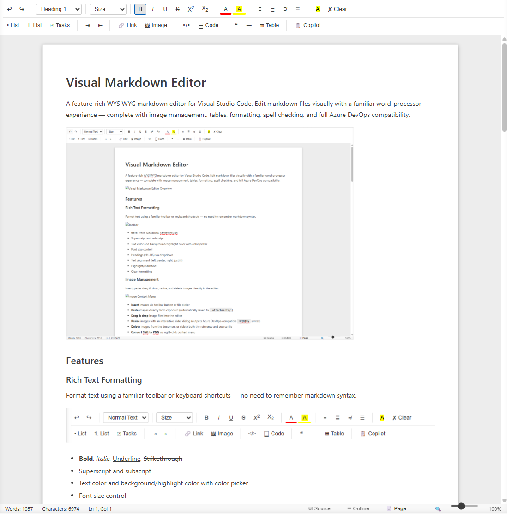
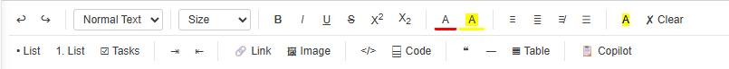
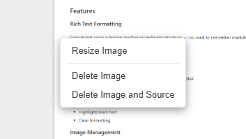

Visual Markdown Editor
A feature-rich WYSIWYG markdown editor for Visual Studio Code. Edit markdown files visually with a familiar word-processor experience — complete with image management, tables, formatting, spell checking, and full Azure DevOps compatibility.

Features
Rich Text Formatting
Format text using a familiar toolbar or keyboard shortcuts — no need to remember markdown syntax.

- Bold, Italic, Underline, Strikethrough
- Superscript and subscript
- Text color and background/highlight color with color picker
- Font size control
- Headings (H1–H6) via dropdown
- Text alignment (left, center, right, justify)
- Highlight/mark text
- Clear formatting
Image Management
Insert, paste, drag & drop, resize, and delete images directly in the editor.

- Insert images via toolbar button or file picker
- Paste images directly from clipboard (automatically saved to
.attachments/) - Drag & drop image files into the editor
- Resize images with an interactive slider dialog (outputs Azure DevOps-compatible
=WIDTHxsyntax) - Delete images from the document or delete both the reference and source file
- Convert SVG to PNG via right-click context menu
- Supports PNG, JPG, GIF, SVG, WebP, BMP, ICO

Tables
Create and edit tables with full context menu support.

- Insert tables with configurable rows, columns, and optional header row
- Right-click context menu to:
- Add/delete rows and columns
- Delete entire table
- Full GFM (GitHub Flavored Markdown) table output
Links
Insert and manage hyperlinks with a dedicated dialog.

- Insert links with URL, display text, title, and “open in new tab” option
- Right-click links to edit, copy URL, or remove the link
- Keyboard shortcut:
Ctrl+K
Code Blocks
- Inline code formatting
- Fenced code blocks with language selection (JavaScript, TypeScript, Python, C#, Java, HTML, CSS, JSON, YAML, Bash, SQL, XML, Markdown, PowerShell, Terraform, and more)
Lists & Tasks
- Bullet lists and numbered lists
- Task lists with interactive checkboxes
- Indent/outdent support
Spell Checking
Built-in spell checker with suggestions and custom dictionary support.

- Underlines misspelled words
- Right-click for correction suggestions
- Add words to your personal custom dictionary (persists across sessions)
Source View
Toggle between the visual WYSIWYG editor and raw markdown source at any time.

- Switch with the Source button in the status bar
- Edits in either view sync back to the file
Document Outline
A navigation pane listing all headings in the document for quick jumping.

- Toggle via the Outline button in the status bar
- Click any heading to scroll to it
Page Mode & Zoom
- Page Mode — renders the document in a constrained page-width layout
- Zoom — slider (50%–200%) or
Ctrl+Scrollto zoom the editor (not available for SVG files)
GitHub Copilot Integration
- Copilot Context button opens a linked text editor so GitHub Copilot agents can read the document content and your selection
- Selection in the visual editor syncs to the linked text editor
Azure DevOps Compatibility
Outputs markdown fully compatible with Azure DevOps wikis:
- Image paths use
/.attachments/convention - Resized images use
syntax (not<img>tags) - GFM tables, task lists, and fenced code blocks
Getting Started
Installation
- Install the extension from the VS Code Marketplace (or install the
.vsixfile manually) - Open any
.md,.markdown, or.mdownfile - When prompted, choose “Visual Markdown Editor” as the editor, or right-click the file in Explorer → “Open with Visual Markdown Editor”

Opening the Editor
There are several ways to open a markdown file in the visual editor:
| Method | How |
|---|---|
| File Explorer | Right-click a .md file → Open with Visual Markdown Editor |
| Command Palette | Ctrl+Shift+P → Open with Visual Markdown Editor |
| New Document | Ctrl+Shift+P → Visual Markdown: New Document |
| Reopen With | Click the editor mode indicator in the tab bar → choose Visual Markdown Editor |
Keyboard Shortcuts
| Shortcut | Action |
|---|---|
Ctrl+B |
Bold |
Ctrl+I |
Italic |
Ctrl+U |
Underline |
Ctrl+K |
Insert link |
Ctrl+Z |
Undo |
Ctrl+Y |
Redo |
Ctrl+Scroll |
Zoom in/out |
Working with Images
- Insert from file: Click the 🖼 Image toolbar button and select an image file
- Paste from clipboard: Copy an image (e.g., screenshot) and paste with
Ctrl+V - Drag & drop: Drag an image file from Explorer into the editor
Images are automatically saved to a .attachments/ folder alongside your markdown file.
To resize an image, right-click it and choose Resize Image, then use the slider to set the desired width.
To convert an SVG to PNG, right-click the SVG image and choose Convert to PNG.
Working with Tables
- Click the ⌬ Table toolbar button
- Set the number of rows, columns, and whether to include a header row
- Click Insert
- Right-click any cell to add/remove rows and columns
Azure DevOps Wiki Usage
This editor is designed to work seamlessly with Azure DevOps wiki repositories:
- Clone your Azure DevOps wiki repo locally
- Open the folder in VS Code
- Edit
.mdfiles with the visual editor - Images are stored in
.attachments/using the convention Azure DevOps expects - Resized images use the
syntax that Azure DevOps renders correctly - Commit and push — your wiki pages will display correctly in Azure DevOps
Requirements
- VS Code 1.80.0 or later
Known Limitations
- SVG images cannot be resized (they are vector graphics with no fixed pixel dimensions) — use Convert to PNG first if you need a specific size
- The spell checker uses a built-in English dictionary; other languages are not currently supported
- Very large documents may experience slight input lag during spell checking
Release Notes
0.1.4
- Image resize now outputs Azure DevOps-compatible
syntax - Removed resize option for SVG files
- Zoom controls hidden for SVG file types
Enjoy! If you have feedback or find issues, please open an issue on the repository.